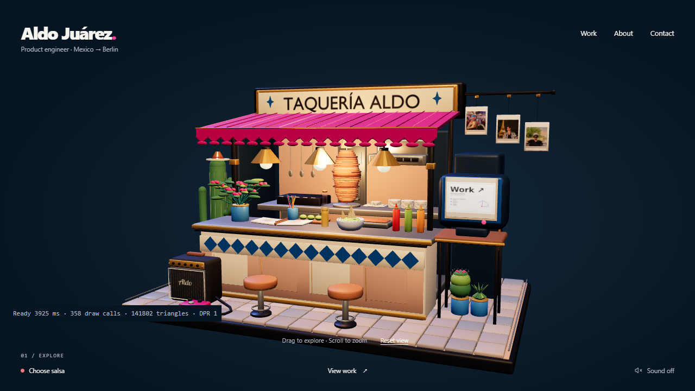
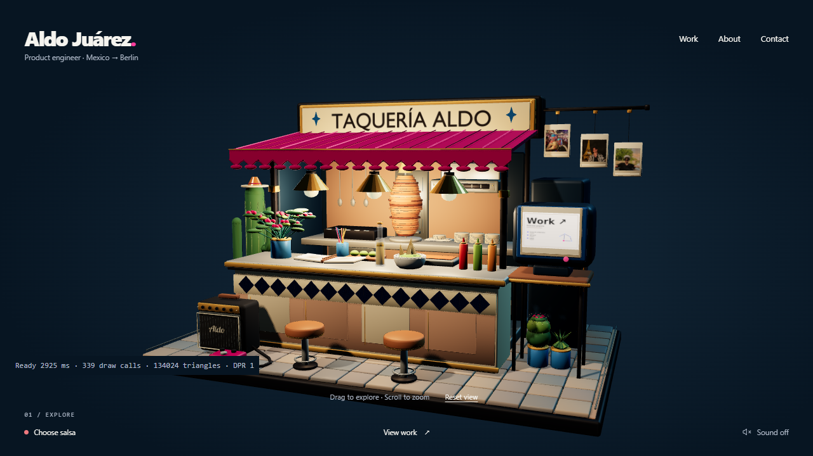
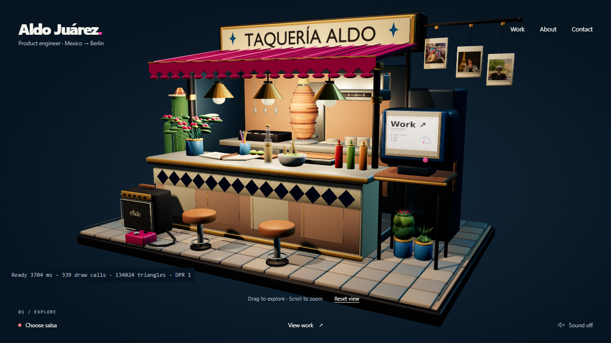
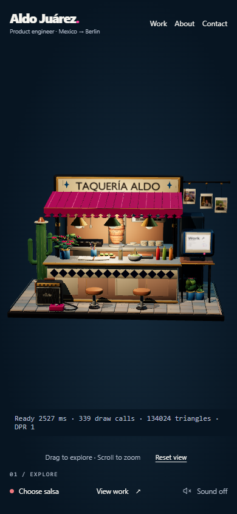

Taquería Aldo: before / after
Visual comparison recorded. Physical-device performance approval remains open.
The frozen model and website UI are preserved. Compare lighting, contact shadows, warm practical lamps and material response at the same camera framing.
BeforeAfter


Matching 1280 × 720 viewport and original camera. The small diagnostics block appears only in QA mode.
Open before · Open after · Measurements and review notes


Refined default camera

Mobile
